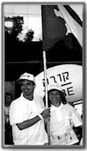
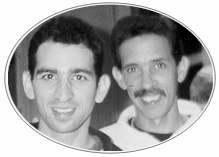
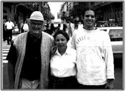

|
| |
|
|
On the November 21,1995 Dr. Adrian Bruckman together with other Cuban doctors performed the brit milah (ritual circumcision) on 14 members of our community, 6 of whom were children. The last brit milah had been performed in Santiago de Cuba 20 years earlier. |
Only a week later, six of these men were married under the chuppah (wedding canopy). Rabbis Claudio Kaiser and Alejandro Felch who had converted various members of the community days earlier were in charge of sanctifying these couples in holy matrimony.
In December 1996, after a year of intensive activities, Andres Novoa Alvarez and Roberto Novoa Bonne, under rabbinical supervision, celebrated their bar mitzvah. Their preparation time was short but their accomplishments were great. This event was remarkable because it had been 33 years since the last bar mitzvah in Santiago. It was an especially joyous time.
In 1996, Rebeca Botton, president of the community, had the honor to be invited to participate in an International Congress of women in Israel where she was given the "Lion of Judah" award.

In July 1997 a young man from our community, Marcos Frómeta Farin, together with two young people from Havana accompanied Dr. Jose Miller as the Cuban Delegation to the Macabbiah Games in Israel. Marcos had the honor of carrying the Cuban flag. In August, 1997, Andres Novoa Castiel and Jorge Rivero Behar attended the 22nd Conference of CAJE (Coalition for the Advancement of Jewish education) in Stanford, California through an invitation by Congregation Netivot Shalom in Berkeley, California.

Click here to see more about our time in California
On October 20, 1997, we celebrated the publication of the history of our community "Sinagoga de Santiago de Cuba" (The Synagogue of Santiago de Cuba) by Eugenia Farin Levy.
Just a few days later, Eugenia Farin Levy, vice president of the community, travelled as a delegate to the 6th meeting of Latin American Women Directors of Jewish Institutions which took place in Mar del Plata, Argentina.

On the 7th of November, Señora Farin brought back a sefer Torah which had been kept in the Adath Israel Synagogue in Havana. This Torah had originally arrived in our city at the beginning of the century. The founders of our community had brought it from Turkey. We believe that it must be more than a century old.
| Home Page | History of the Community | The Synagogue Today | Important Events |
| Cuban Jewish Community |